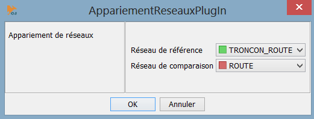
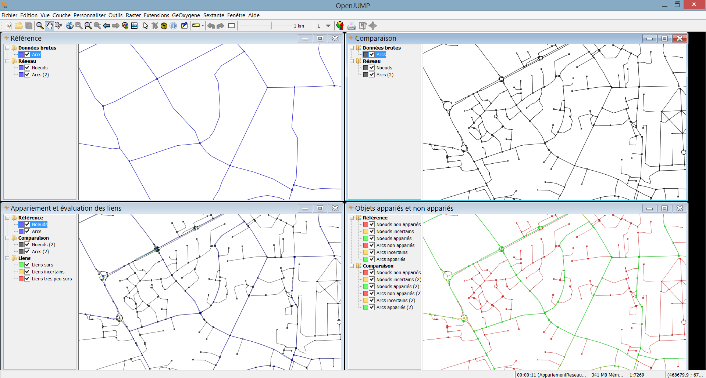

Getting Started with GeOxygene Plugin for OpenJUMP
Plugin Network matching
Playing
Download demo data :
- Network 1 : http://svn.code.sf.net/p/oxygene-project/code/main/trunk/geoxygene-data/ign-echantillon/bdcarto/BDC_3-1_SHP_LAMB93_X072-ED111/RESEAU_ROUTIER/TRONCON_ROUTE.zip
- Network 2 : http://svn.code.sf.net/p/oxygene-project/code/main/trunk/geoxygene-data/ign-echantillon/bdtopo/72_BDTOPO_shp/BDT_2-0_SHP_LAMB93_X062-ED111/A_RESEAU_ROUTIER/ROUTE.zip
Start OpenJUMP.
Load both shapefiles
Select menu “GeOxygene >> Appariement >> Appariement de réseaux”.
Launch matching
Figure 1 : Dataset
Results of matching will be displayed on windows.
Figure 2 : Results of matching
Finish.
{kind=link}
{kind=link}
Reference
- Mustière S., Devogele T., 2008, Matching networks with different levels of detail , GeoInformatica, Vol.12 n°4, pp 435-453
Plugins “quality”
Presentation
Several plugins concern the “geoxygene-quality” module :
- « PlugInEstim » : this plugin concern the EstIM model developed during the PhD of (Girres, 2012). Allows the computation of different impacts (projection, terrain, polygonal approximation, digitizing error, generalisation) for lengths and areas.
- « PlugInComparison » : a plugin to compute differences between datasets. Automatic or manuel matching are provided for polygons and linestrings. Different methods to normalize linestring comparisons are also proposed (extremity cutting, section cutting)
- « PlugInMountainGridDetection » : a plugin to facilitate the delineation of mountainous areas
- ...

Figure 3 : Results of computing differences between datasets